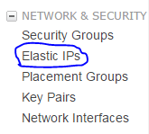

Great, you have an AWS EC2 instance. EC2 instance is widely used as server by developers, where many of your applications point. After creation of EC2 instance you get an IP. But whenever you stop or restart your instance, every time you get a new IP. Due to this outside world cannot stay connected to your machine. So, here Elastic IP comes into picture. With this feature of AWS you can assign static IP to your EC2 instance.
Follow below steps to assign a static IP to your instance:
- Navigate to your EC2 dashboard.
- In the left side pane click “Elastic IPs” under “Network and Security”.

- Click on “Allocate New Address”.
- Now you got a new static IP. We have to associate this IP with an Instance.
- Select the IP you just created and click on “Actions”. And then click on “Associate Address”.
- Now, in the pop up just came, click in “Instance”. Your running instance should appear, select one. And click on “Associate”.
- Great, the new IP is assigned to your instance.
- Now you can access your machine from the IP we just created.
**Note: If you create an IP, then it should be associated with any running instance on AWS. Any unassociated IP is charged as $0.01/hr. this is done in order to prevent reserving IP unnecessarily.
Reference : Amazon Webservices Docs